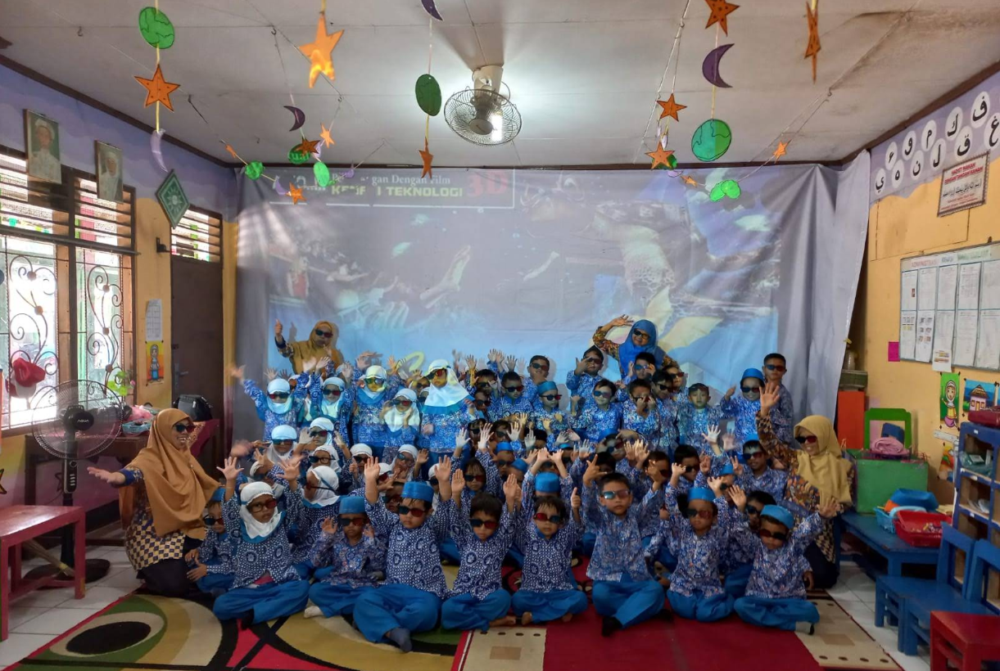
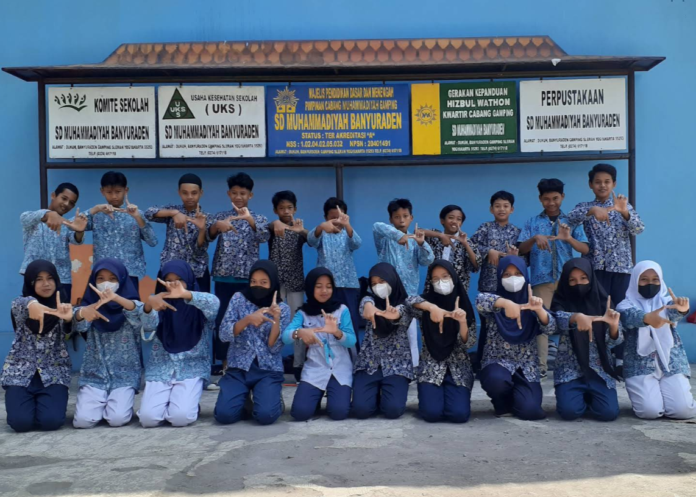

TK ABA Dukuh 1
TK ABA Banyuraden merupakan lembaga pendidikan anak usia dini yang menanamkan nilai Islam, karakter, dan kemandirian sejak dini. Taman Kanak-Kanak Aisyiyah Bustanul Athfal (ABA) adalah sekolah tingkat pra-sekolah yang dikelola oleh 'Aisyiyah (bagian dari amal usaha Muhammadiyah). Di Banyuraden (atau wilayah Dukuh/Somodaran) ada TK ABA Dukuh 1, TK ABA Dukuh 2 Somodaran, dan TK ABA Banyumeneng. Ketiga TK tersebut berada di wilayah Banyuraden, Gamping, Sleman dan termasuk bagian dari jaringan pendidikan early childhood Muhammadiyah/'Aisyiyah di sana.
Alamat:
-
TK ABA Dukuh 1 - Gg. Ontorejo, Dukuh, Kalurahan Banyuraden, Kapanewon Gamping,
Kabupaten Sleman, D. I. Yogyakarta - 55293
Lihat di Google Maps -
TK ABA Dukuh 2 Somodaran - Jl. Sri Rahayu, Sumodaran,
Kalurahan Banyuraden, Kapanewon Gamping, Kabupaten Sleman, D. I. Yogyakarta - 55293
Lihat di Google Maps -
TK ABA Banyumeneng - Jl. Arjuna, Banyumeneng,
Kalurahan Banyuraden, Kapanewon Gamping, Kabupaten Sleman, D. I. Yogyakarta - 55293
Lihat di Google Maps
Pembelajaran Berbasis Karakter Islami
Program ini bertujuan untuk membentuk karakter anak sejak dini dengan pendekatan yang mengintegrasikan nilai-nilai Islam, seperti kejujuran, kasih sayang, dan disiplin dalam kehidupan sehari-hari.
Kegiatan Seni dan Kreativitas Anak
Anak-anak diberikan ruang untuk mengekspresikan diri melalui berbagai kegiatan seni, seperti musik, tari, dan seni rupa, yang dapat mengembangkan kreativitas dan imajinasi mereka.
Pengenalan Nilai Keislaman
Melalui pendekatan yang menyenangkan, anak-anak diperkenalkan dengan nilai-nilai dasar dalam Islam, seperti doa-doa sehari-hari, akhlak mulia, serta cerita-cerita Nabi yang penuh hikmah.
Kegiatan Tematik dan Outing Class
Untuk memperkaya pengalaman belajar, anak-anak mengikuti kegiatan tematik yang menarik dan outing class ke berbagai tempat edukatif, sehingga mereka dapat belajar secara langsung dari pengalaman.
SD Muhammadiyah Banyuraden
SD Muhammadiyah Banyuraden adalah lembaga pendidikan yang berfokus pada pengembangan potensi anak secara holistik, mencakup aspek akademik, karakter, dan spiritual. Dengan pendekatan pendidikan berbasis nilai-nilai Islam, sekolah ini berkomitmen untuk mencetak generasi yang tidak hanya cerdas, tetapi juga berakhlak mulia dan mampu berkontribusi positif di masyarakat. Melalui berbagai program unggulan, SD Muhammadiyah Banyuraden membekali siswa dengan keterampilan dan wawasan yang relevan dengan perkembangan zaman.
Alamat:
SD Muhammadiyah Banyuraden - Jl. Tata Bumi Selatan, Dukuh,
Kalurahan Banyuraden, Kapanewon Gamping, Kab. Sleman, D. I. Yogyakarta - 55293
Lihat di Google Maps

SD Muhammadiyah Banyuraden
Pendidikan Akademik Terpadu
Program ini menawarkan pembelajaran yang menyeluruh, mengintegrasikan berbagai mata pelajaran untuk memastikan siswa memiliki pemahaman yang kuat dalam berbagai bidang ilmu.
Pembiasaan Ibadah & Akhlak
Menanamkan kebiasaan ibadah yang baik dan membangun akhlak mulia melalui pendidikan karakter berbasis Islam yang dijalankan secara konsisten setiap hari.
Literasi Digital & Teknologi
Mempersiapkan siswa untuk menghadapi tantangan dunia digital dengan mengajarkan keterampilan teknologi dan literasi digital yang sesuai dengan perkembangan zaman.
Prestasi Akademik & Non-Akademik
Memberikan kesempatan bagi siswa untuk mengembangkan bakat dan minat melalui berbagai kompetisi, baik di bidang akademik maupun non-akademik, untuk meraih prestasi yang membanggakan.